Ivan Reb Villamucho
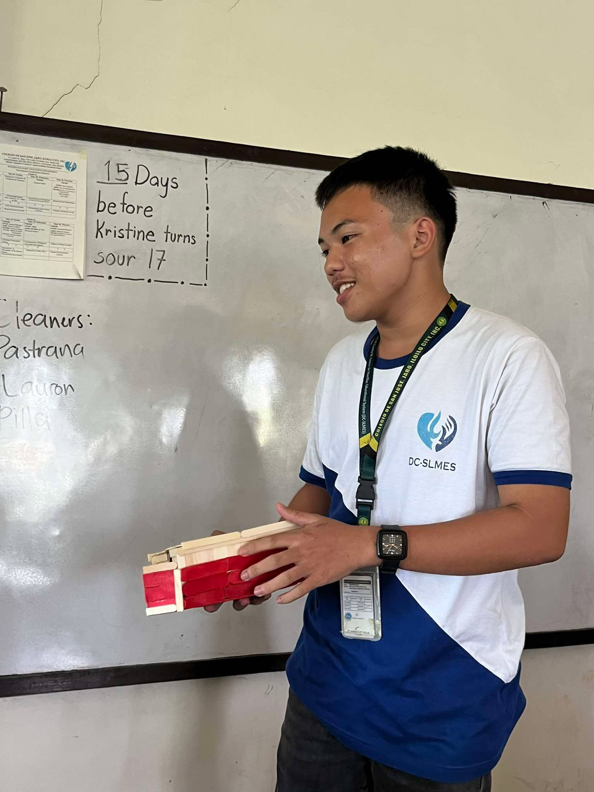
Ivan Reb Villamucho — study 1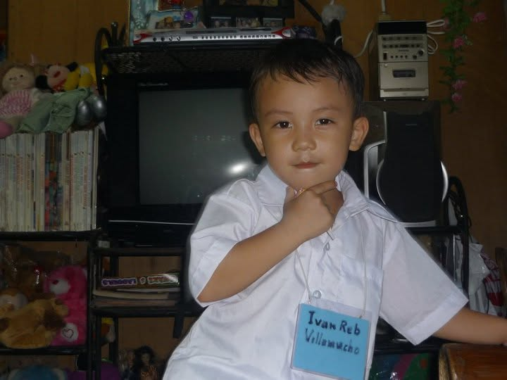
Ivan Reb Villamucho — study 2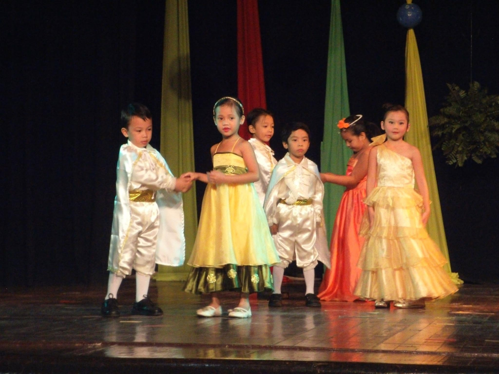
Ivan Reb Villamucho — study 3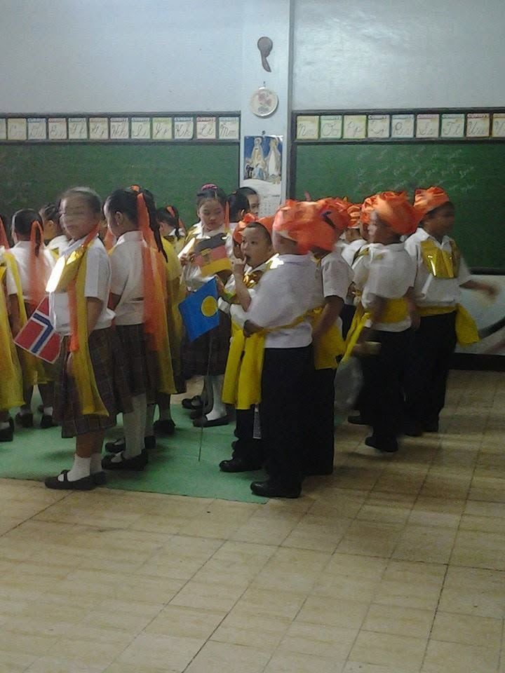
Ivan Reb Villamucho — study 4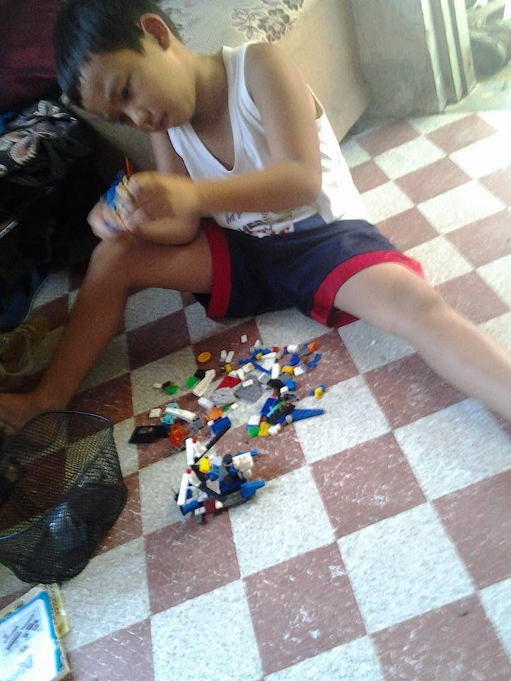
Ivan Reb Villamucho — study 5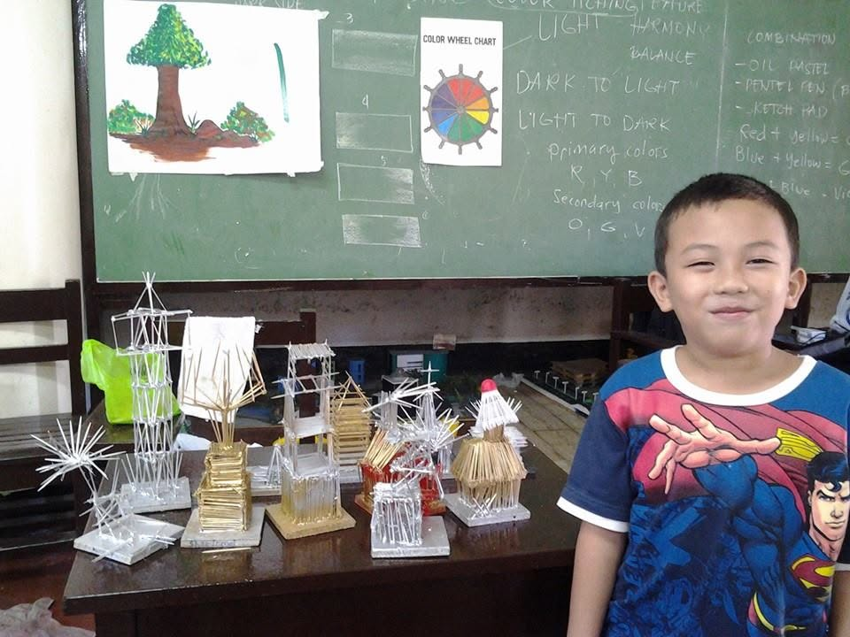
Ivan Reb Villamucho — study 6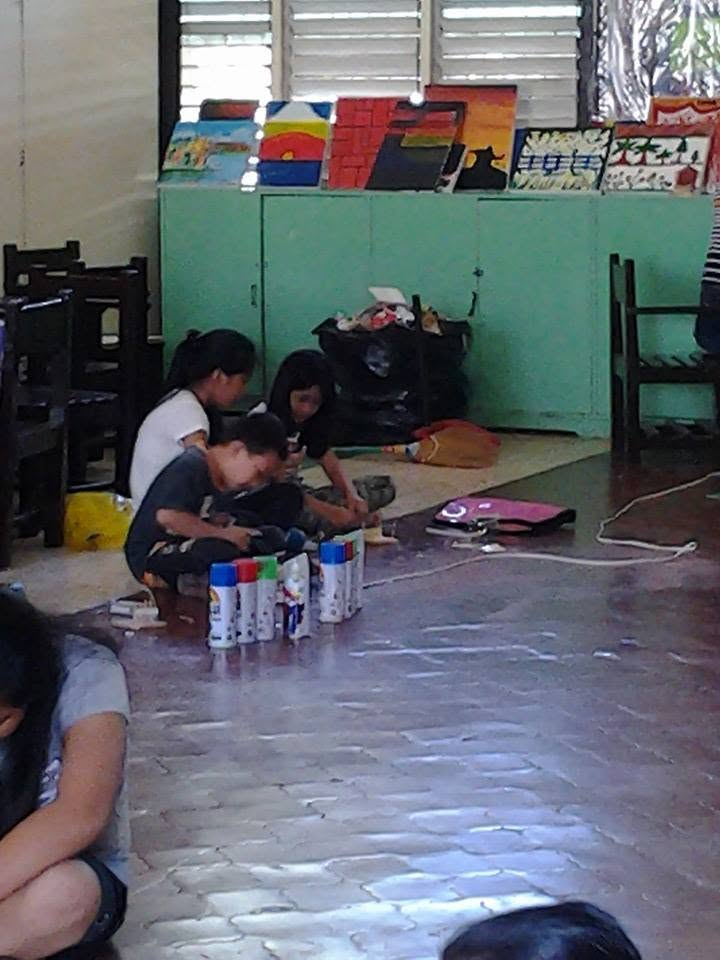
Ivan Reb Villamucho — study 7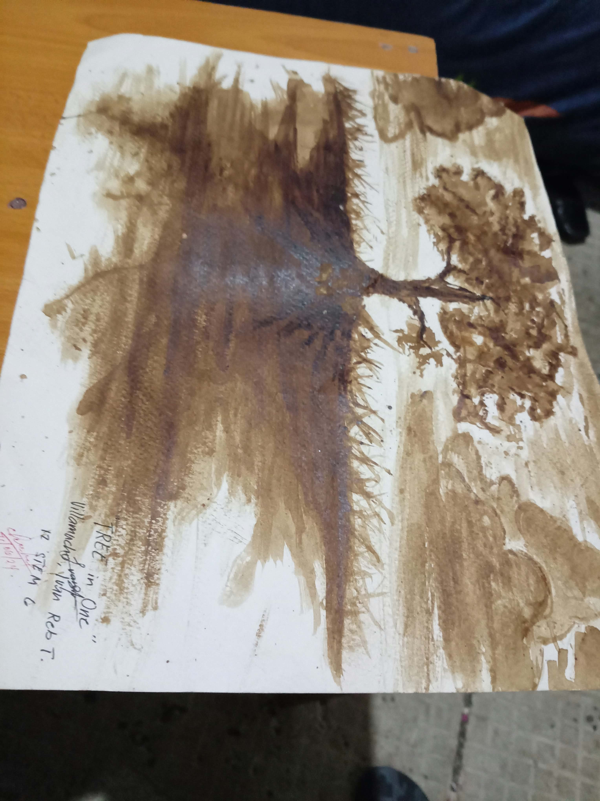
Ivan Reb Villamucho — study 8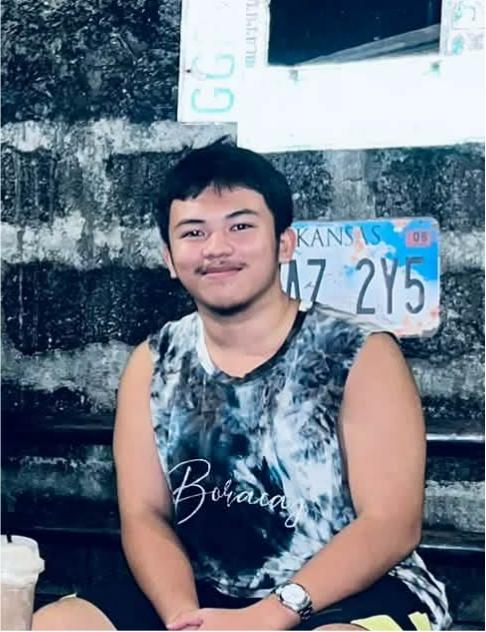
Ivan Reb Villamucho — study 9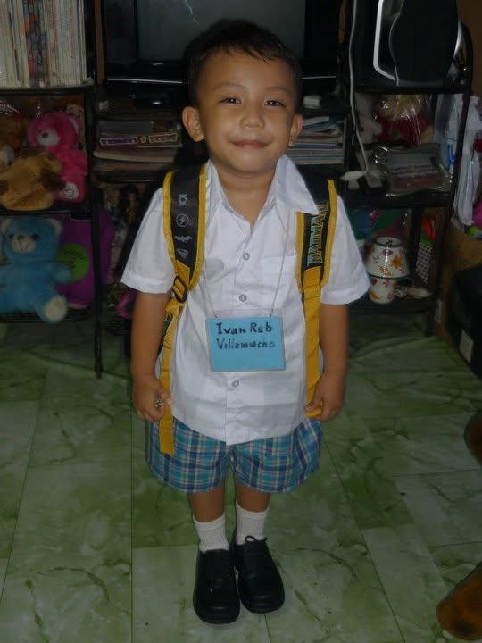
Ivan Reb Villamucho — study 10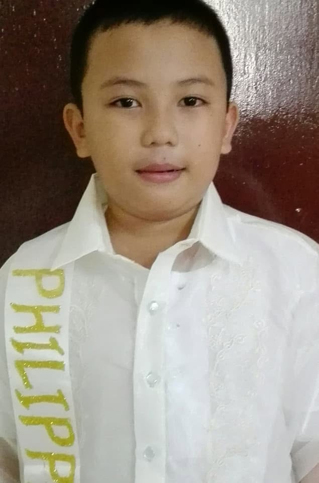
Ivan Reb Villamucho — study 11
Looking back at my childhood, I realized that my journey with art started even before I fully understood what art really meant. During my kindergarten years, I remember participating in school plays and dancing activities. At that age, I did not really think of these activities as forms of art. I simply saw them as opportunities to have fun, perform, and enjoy moments with my classmates. I was also a curious child who enjoyed playing with toys, building things with LEGO, and exploring different activities. Even though I was still young, these experiences became my first exposure to creativity and artistic expression.
My evolution in art has been a journey of discovery, learning, and appreciation. From participating in kindergarten performances and dancing, to joining an art program in elementary school, creating different projects, and eventually developing a deeper understanding of art in college, every stage has contributed to how I see creativity today. I may not be as actively involved in creating artworks as I was when I was younger, but I believe that the creativity and experiences I gained during those years are still part of who I am. Looking back at my old pictures also reminds me that art has always been present in different parts of my life, even when I did not recognize it. It taught me that art is not just about the final product but also about the memories, experiences, imagination, and personal growth behind every creation.